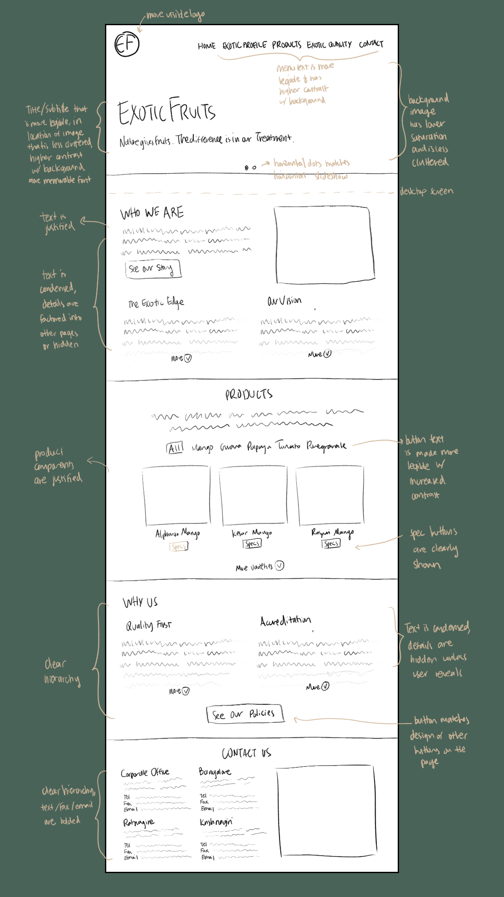
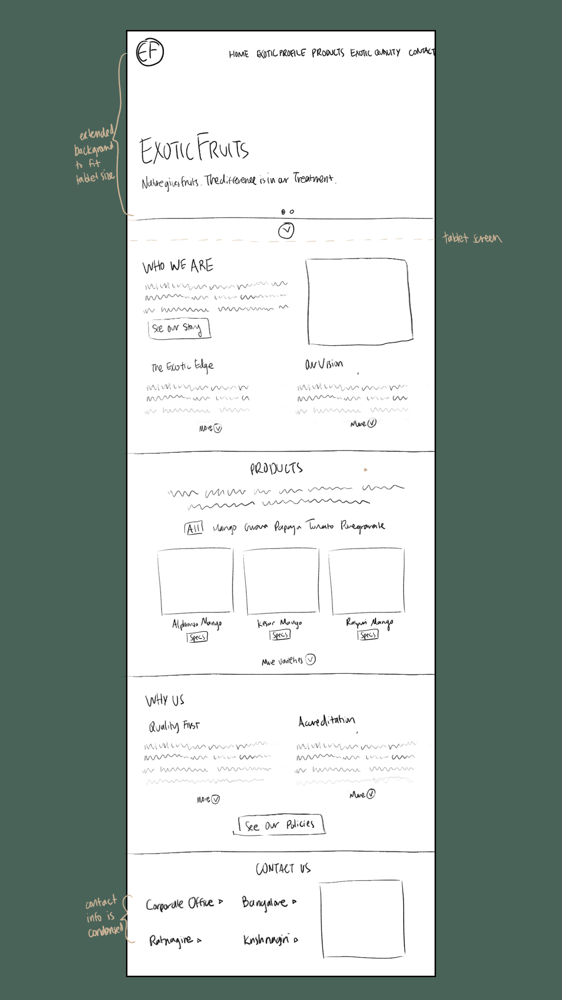
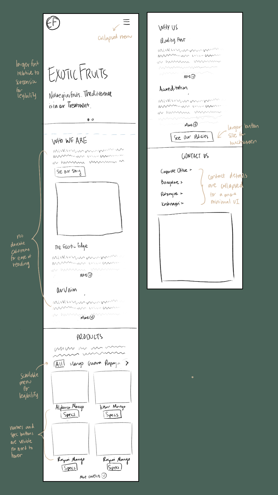
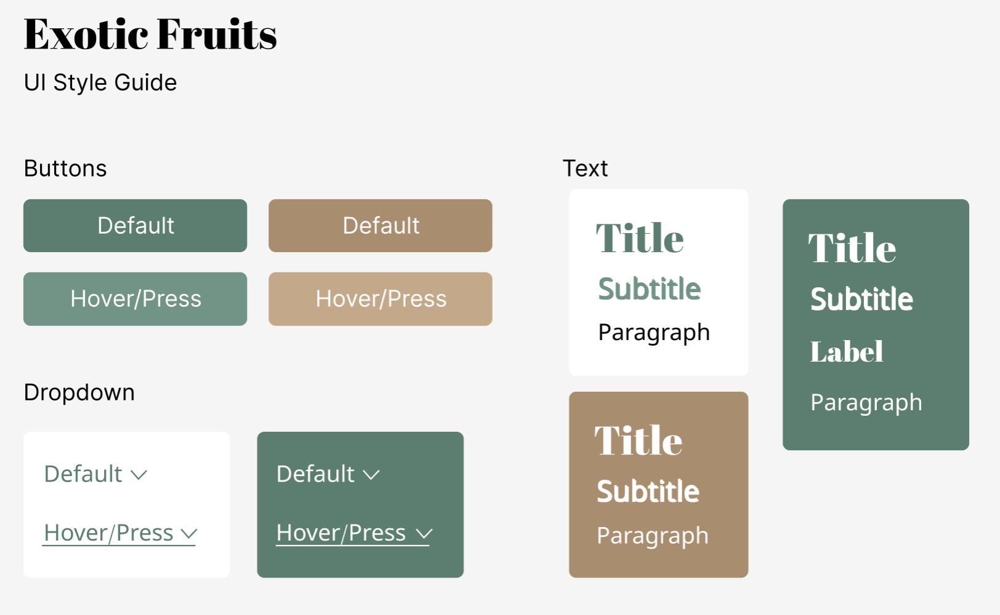

Responsive Redesign
Exotic Fruits
An tropical fruit exporter based in India
1. Identifying Usability Problems
To identify aspects of the site that could be improved, I analyzed it
based on three criteria: usability, learnability, memorability, and
accessibility.
Usability
-
Very text-heavy (small font, lack of margins, large paragraphs)
detracts from aesthetic and minimalist values
-
Text diminishes visibility of most important points and prevents
users from being able to quickly understand info upon a glance
-
Different parts of the page do not feel consistent with each
other--i.e. the roundness of the elements and larger, bolder text
under the Products section clashes with the rest of the site
-
There is general lack of action phrases and elements--information is
presented very factually and does not invite users to learn more
about the site
-
Minor: the dots indicating the homepage slider are vertical, while
the images scroll horizontally
Learnability
- The site is fairly simple and is generally easily learned
-
Element functions are consistent--i.e. the navigation menu buttons
all behave in the same way (scroll to the relevant part of the page)
-
It is not apparent that the fruit pictures under Products can be
clicked to view specs, and even less so that the specs only pop up
when the eye icon is clicked after hovering over the picture
Memorability
-
Lack of recognizable font scheme, color scheme, or design--all text
looks very "default"
- Logo is not very visible
-
Photos are not very personable or specific to the company, and the
product photos are also stock photo-like
Accessibility
-
Main title text over image, button text under Products section, and
navigation menu are not very legible due to low contrast and weak
font
-
Hierarchies could be improved--some locations where subtitles are
smaller and less legible than they could be
- Images do not have alt text
2. Lo-Fi Prototypes
I sketched a new UI design for Exotic Fruits to address the issues
described above, making sure it would be responsive to different types
of devices.
Desktop

Tablet

Mobile

3. Visual Design Style Guide

5. Hi-Fi Prototypes
From my lo-fi sketches, I developed hi-fi prototypes following my visual
design style guide.
Desktop
Tablet
Mobile
6. Responsive Redesign
Finally, I redesigned a homepage following my prototypes and visual
design guide, which can be viewed below:
Redesigned Website